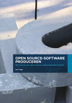

|  |
Open source-software producerenMet succes een open source-softwareproject runnenKarl Fogel |
Met dank aan SURFnet en Kennisnet voor het sponsoren van deze vertaling, de publicatie in boekvorm en het opsturen van onderstaande PDF-bestanden.
De originele Engelse versie van het boek vindt U hier.